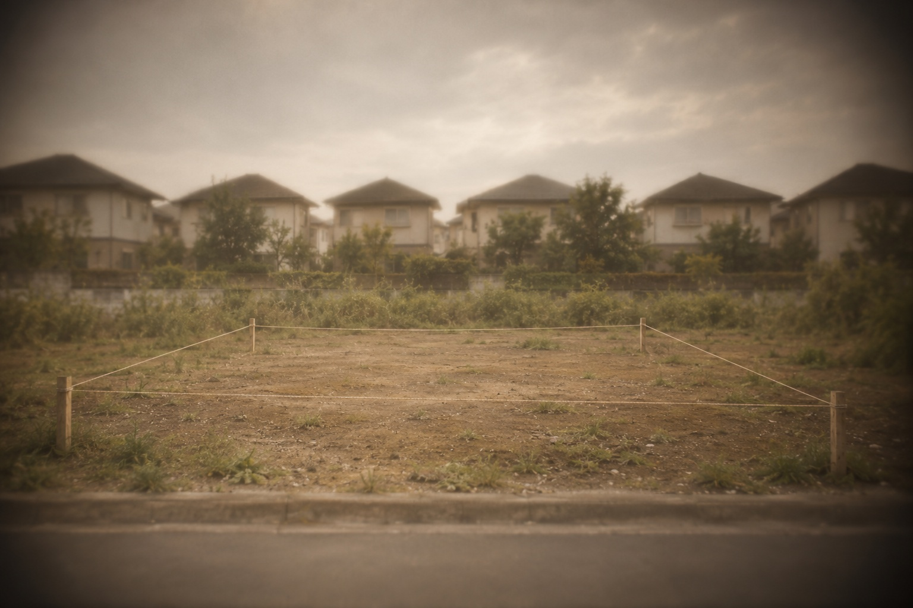
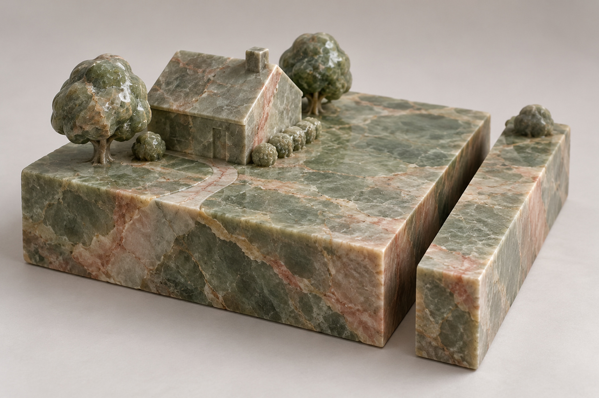

Der Bodenrichtwert ist ein durchschnittlicher Wert pro Quadratmeter Grundstücksfläche für eine Zone mit ähnlichen Grundstücken. Er wird von den unabhängigen Gutachterausschüssen aus tatsächlich gezahlten Kaufpreisen ermittelt und in Bodenrichtwertkarten veröffentlicht, in Berlin und Brandenburg über das Portal BORIS. Beim Immobilienkauf brauchen Sie ihn vor allem für die Aufteilung des Kaufpreises in Grundstück und Gebäude, die Ihre Abschreibung bestimmt.
Das Wichtigste in Kürze
- Der Bodenrichtwert ist ein Durchschnittswert pro m² Grundstück, ermittelt aus echten Kaufpreisen.
- Sie finden ihn kostenlos in den Bodenrichtwertportalen der Länder (BORIS).
- Bodenwertanteil einer Wohnung = Grundstücksfläche × Bodenrichtwert × Miteigentumsanteil.
Was im Etikett steht und was davon Ihrer Wohnung gehört
Oben eine Zone, wie sie auf der Bodenrichtwertkarte erscheint: Tippen Sie auf die Angaben im Etikett. Unten der Weg vom Bodenrichtwert zum Bodenanteil einer Eigentumswohnung.
Karte schematisch, keine echte Adresse · Rechnung ohne Umrechnung für abweichende Geschossflächenzahl · Grafik: Fischer & Geserich
Woher der Bodenrichtwert kommt
Jeder notarielle Kaufvertrag über ein Grundstück, ein Haus oder eine Wohnung wird an den Gutachterausschuss der jeweiligen Region übermittelt. Der Ausschuss sammelt diese Preise in einer Kaufpreissammlung und leitet daraus nach § 196 Baugesetzbuch für jede Zone einen durchschnittlichen Bodenwert ab, bezogen auf ein unbebautes Grundstück mit typischen Merkmalen. Die Werte werden mindestens alle zwei Jahre neu ermittelt, in vielen Regionen jährlich, auch in Berlin und Brandenburg.
Weil der Wert aus echten Verkäufen stammt, ist er eine der wenigen öffentlich zugänglichen Marktzahlen, die nicht von Anbietern oder Portalen kommt.
Wie Sie die Angaben lesen

Auf der Karte steht zu jeder Zone ein Block mit mehreren Angaben:
- Wert in Euro pro Quadratmeter. Der durchschnittliche Bodenwert für ein typisches Grundstück in dieser Zone.
- Stichtag. Das Datum, auf das sich der Wert bezieht, meist der 1. Januar. Liegt er lange zurück, kann sich der Markt seither verändert haben.
- Entwicklungszustand. In der Regel „baureif“. Für Bauerwartungsland oder Ackerland gelten ganz andere Werte.
- Art der Nutzung. Etwa W für Wohnbauflächen, M für gemischte Bauflächen, G für gewerbliche.
- Maß der Nutzung. Häufig die Geschossflächenzahl (GFZ), die angibt, wie dicht bebaut werden darf. Ein Grundstück, auf dem mehr gebaut werden darf als im Durchschnitt der Zone, ist mehr wert, eines mit weniger entsprechend weniger. Für solche Abweichungen veröffentlichen die Gutachterausschüsse Umrechnungskoeffizienten.
Der Bodenrichtwert gilt für das typische Grundstück der Zone. Ein Eckgrundstück, ein ungewöhnlicher Zuschnitt oder eine besondere Lage innerhalb der Zone können den tatsächlichen Wert nach oben oder unten verschieben.
Wofür Sie ihn brauchen
Abschreiben können Sie nur den Gebäudeanteil. Fehlt eine Aufteilung im Kaufvertrag, rechnet das Finanzamt den Bodenanteil häufig mit dem Bodenrichtwert aus, über die Arbeitshilfe des Bundesfinanzministeriums. Wer den Wert kennt, kann prüfen, ob eine Aufteilung realistisch ist, und sie schon im Kaufvertrag festhalten. Eine Aufteilung im Kaufvertrag muss das Finanzamt grundsätzlich übernehmen, solange sie die realen Wertverhältnisse nicht grundlegend verfehlt.
Bei Häusern und Grundstücken zeigt der Bodenwert, welcher Teil des Preises auf das Grundstück entfällt und welcher auf das Gebäude. Ein altes Haus auf einem großen Grundstück in guter Lage wird oft vor allem wegen des Bodens gekauft.
Seit der Grundsteuerreform, die seit 2025 gilt, fließt der Bodenrichtwert in den meisten Bundesländern, auch in Berlin und Brandenburg, in die Berechnung der Grundsteuer ein.
Rechenbeispiel: der Bodenanteil einer Eigentumswohnung

Bei einer Eigentumswohnung gehört Ihnen ein Anteil am Grundstück, der Miteigentumsanteil, angegeben in Tausendsteln.
Ein Grundstück in Berlin-Prenzlauer Berg mit 600 Quadratmetern liegt in einer Zone mit einem Bodenrichtwert von 2.700 Euro pro Quadratmeter. Der Bodenwert beträgt damit 1.620.000 Euro. Zu Ihrer Wohnung mit rund 50 Quadratmetern gehören 45/1.000 Miteigentumsanteile. Ihr Bodenwertanteil beträgt also 72.900 Euro.
Kostet die Wohnung 300.000 Euro, entfallen rechnerisch gut 24 Prozent auf den Boden und knapp 76 Prozent auf das Gebäude. Dieser Gebäudeanteil ist, zusammen mit dem entsprechenden Anteil der Kaufnebenkosten, die Grundlage Ihrer Abschreibung.
Diese Rechnung ist eine Annäherung: Der Bodenwert wird abgezogen, der Rest gilt als Gebäude. Das Finanzamt rechnet anders. Seine Arbeitshilfe, eine Excel-Datei des Bundesfinanzministeriums, teilt den Kaufpreis im Verhältnis von Bodenwert und Gebäudewert auf. In teuren Lagen wie München oder Berlin kommt sie nach unserer Erfahrung oft nur auf 20 bis 40 Prozent Gebäudeanteil. Halten Sie deshalb eine realistische Aufteilung im notariellen Kaufvertrag fest, zum Beispiel nach einer Rechnung wie dieser. Dann muss das Finanzamt aktiv dagegen vorgehen, wenn es davon abweichen will. Fehlt die Aufteilung im Vertrag, bestimmt das Finanzamt den Gebäudeanteil selbst. Mit einem Gutachten lässt sich dessen Ansatz widerlegen.
Die Einschätzung von Fischer & Geserich
Den Bodenrichtwert schlagen wir bei jedem Objekt nach, das wir bewerten oder mit einem Kunden prüfen. Er ist keine Bewertung des Objekts, aber ein unabhängiger Anker. Bei Kapitalanlagen nutzen wir ihn vor allem, um die Kaufpreisaufteilung schon vor der Beurkundung realistisch festzulegen.
Häufige Fragen
Was ist der Bodenrichtwert?
Ein durchschnittlicher Wert pro Quadratmeter für unbebaute Grundstücke mit typischen Merkmalen in einer bestimmten Zone. Er wird von den Gutachterausschüssen aus tatsächlich gezahlten Kaufpreisen ermittelt und mindestens alle zwei Jahre veröffentlicht, in Berlin und Brandenburg jährlich.
Wo finde ich den Bodenrichtwert?
In den Bodenrichtwertportalen der Länder, für Berlin und Brandenburg über BORIS. Dort lässt sich die Zone über eine Karte oder die Adresse suchen. Die Einsicht ist kostenlos.
Wie berechne ich den Bodenwertanteil einer Eigentumswohnung?
Grundstücksfläche mal Bodenrichtwert ergibt den Bodenwert. Diesen multiplizieren Sie mit Ihrem Miteigentumsanteil. Beispiel: 600 Quadratmeter mal 2.700 Euro ergibt 1.620.000 Euro, bei 45/1.000 Anteilen sind das 72.900 Euro.
Quellen
Die Bilder in diesem Beitrag wurden mit KI erstellt.
Der Beitrag dient der allgemeinen Information und ersetzt keine Rechts-, Steuer-, Finanzierungs- oder Anlageberatung. Zinssätze in Beispielrechnungen sind Beispielwerte, keine aktuellen Konditionen.